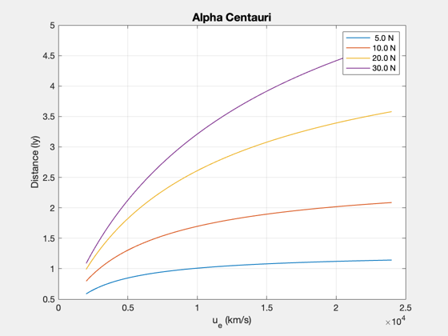
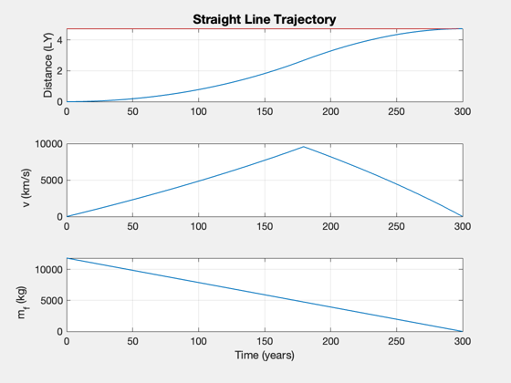

Contents
Explore parameter space for straight-line interstellar mission
------------------------------------------------------------------------- See also: StraightLineConstantThrust, SimulateStraightLineTrajectory, He3MassFromPower (Fusion Toolbox) -------------------------------------------------------------------------
%-------------------------------------------------------------------------- % Copyright 2018 Princeton Satellite Systems, Inc. %-------------------------------------------------------------------------- % Since Version 2018.1 %--------------------------------------------------------------------------
Explore a range of uE and thrust
g = StraightLineDataStructure; g.mP = 1000; % kg g.mE = []; eta = 0.6; sigma = 100e3; % W/kg years = 300; g.f = 0.03; year = 365.25*86400; g.tF = years*year; uE = linspace(2000,24000); % km/s n = length(uE); thrust = [5 10 20 30]; dists = zeros(length(thrust),n); tS = zeros(length(thrust),n); leg = cell(1,length(thrust)); for j = 1:length(thrust) for k = 1:length(uE) % compute distance traveled for each parameter combo g.uE = uE(k); g.thrust = thrust(j); g = StraightLineConstantThrust( g ); dists(j,k) = g.dF; tS(j,k) = g.tS; end leg{1,j} = sprintf('%4.1f N',thrust(j)); end lY = 9.46728e+12; % light year dD = 4.27*lY; aS = abs(dists-dD); jMin = 1; kMin = 1; dMin = aS(1,1); for j = 1:length(thrust) for k = 1:length(uE) if( aS(j,k) < dMin ) jMin = j; kMin = k; dMin = aS(j,k); end end end Plot2D(uE,dists/lY,'u_e (km/s)','Distance (ly)','Alpha Centauri'); legend(leg);
What is the maximum distance achieved?
[~,kk] = max(dists(end,:));
g.uE = uE(kk);
g.thrust = thrust(end);
d = StraightLineConstantThrust( g );
SimulateStraightLineTrajectory( d );
power = 0.5*g.thrust*g.uE*1000/eta;
s = {}; k = 1;
s{k,1} = 'Payload'; s{k,2} = sprintf('%12.0f',g.mP); s{k,3} = 'kg'; k = k + 1;
s{k,1} = 'Travel time'; s{k,2} = sprintf('%12.2f',g.tF/year); s{k,3} = 'years'; k = k + 1;
s{k,1} = 'Specific Power'; s{k,2} = sprintf('%12.2f',sigma*1e-3); s{k,3} = 'kW/kg'; k = k + 1;
s{k,1} = 'Exhaust velocity'; s{k,2} = sprintf('%12.1f',g.uE); s{k,3} = 'km/s'; k = k + 1;
s{k,1} = 'Thrust Efficiency'; s{k,2} = sprintf('%12.2f',eta); s{k,3} = ''; k = k + 1;
s{k,1} = 'Fuel Fraction'; s{k,2} = sprintf('%12.2f',g.f); s{k,3} = ''; k = k + 1;
s{k,1} = 'Switch time'; s{k,2} = sprintf('%12.2f',d.tS/year); s{k,3} = 'years'; k = k + 1;
s{k,1} = 'Thrust'; s{k,2} = sprintf('%12.2f',g.thrust); s{k,3} = 'N'; k = k + 1;
s{k,1} = 'Total Mass'; s{k,2} = sprintf('%12.2f',d.m0); s{k,3} = 'kg'; k = k + 1;
s{k,1} = 'Mass Dry'; s{k,2} = sprintf('%12.2f',d.mD); s{k,3} = 'kg'; k = k + 1;
s{k,1} = 'Mass Engine'; s{k,2} = sprintf('%12.2f',d.mE); s{k,3} = 'kg'; k = k + 1;
s{k,1} = 'Mass Fuel'; s{k,2} = sprintf('%12.2f',d.mF); s{k,3} = 'kg'; k = k + 1;
if exist('He3MassFromPower','file')
masses = He3MassFromPower(power*years*86400*365.25);
mHe3 = masses(1);
s{k,1} = 'Mass He3'; s{k,2} = sprintf('%12.2f',mHe3); s{k,3} = 'kg'; k = k + 1;
end
s{k,1} = 'Flow Rate'; s{k,2} = sprintf('%12.2f',d.mF/g.tF*1e3); s{k,3} = 'g/s'; k = k + 1;
s{k,1} = 'Power'; s{k,2} = sprintf('%12.2f',power/1e6); s{k,3} = 'MW'; k = k + 1;
s{k,1} = 'Final Distance'; s{k,2} = sprintf('%12.2f',dists(end,kk)/lY); s{k,3} = 'ly'; k = k + 1;
DisplayLatexTable( s )
%--------------------------------------
% $Id: 513700174aad9c7e5688b3c50c1915bcc4a4cb8e $
Payload 1000 kg
Travel time 300.00 years
Specific Power 100.00 kW/kg
Exhaust velocity 24000.0 km/s
Thrust Efficiency 0.60
Fuel Fraction 0.03
Switch time 179.54 years
Thrust 30.00 N
Total Mass 21522.46 kg
Mass Dry 9688.36 kg
Mass Engine 8333.33 kg
Mass Fuel 11834.10 kg
Flow Rate 0.00 g/s
Power 600.00 MW
Final Distance 4.73 ly
